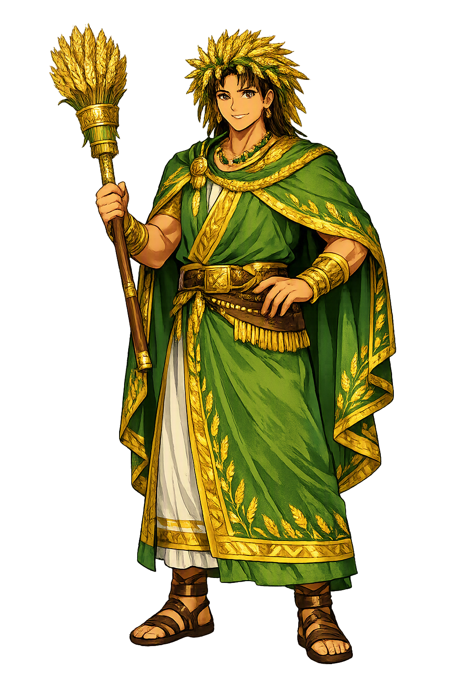

The Authentic Orthography
Agriculture, Vanishing God · The vanished god who froze the world

Unicode restoration and ASCII comparison
𒀭𒋼𒂊𒇷𒁉𒉡𒌑
The name in its original Hittite form. Telipinu (𒀭𒋼𒂊𒇷𒁉𒉡𒌑) is attested in the source tradition — “Unknown”. Its original diacritics and script distinctions carry the full phonetic and orthographic weight of the source tradition.
telipinu
The plain telipinu form is identical to the Unicode restoration. Because this name is already written in Latin letters, no diacritics, stress, or script information were lost — only capitalization differs.
Telipinu
The Unicode restoration does not need to recover lost marks for Telipinu. Its value is canonical spelling and consistent cataloguing, not the reconstruction of erased orthography. The domain is readable as-is to both DNS and humanity.
Telipinu.com → telipinu.com
The non-ASCII characters in Telipinu are encoded while the ASCII remains visible. To the DNS, it is Punycode. To humanity, it is Telipinu.
How Telipinu travels from ancient script to the modern URL
Owned, ideal, and ASCII forms of Telipinu
Telipinu
Restores 𒀭𒋼𒂊𒇷𒁉𒉡𒌑. The full Unicode restoration. telipinu.com is not in the PuniCodex collection — it is watched for release; if it drops, this temple upgrades to an owned flagship.
How Telipinu was spoken
Agriculture, Anger, and Ritual Restoration
Telipinu is the Hittite god who makes the grain grow — and the god who, when offended, takes his gift away. His myth is not a cosmic battle but a domestic crisis of divine temper: the deity storms out of the assembly, slams the door, and wanders off in a rage. Behind him the fields wither, cattle abandon their calves, mothers forget their children, and even the cooking fire goes out. The world does not end by flood or dragon; it ends because a god has left the room.
The Telipinu Myth (CTH 324) is one of the best-preserved Hittite religious narratives. It is also a ritual text: the story is performed in order to undo the very disaster it describes. Telipinu is therefore a god of restorable order — his absence is catastrophic, but his return, properly negotiated by magic and apology, brings everything back.
When offended, Telipinu puts his right shoe on his left foot and his left shoe on his right foot, then storms into the wilderness — a formal gesture of inverted order.
His absence dries up springs, kills the grain, and unbinds social bonds: sheep reject their lambs and mothers turn away from their children.
The gods send a bee to find Telipinu in the meadow; it stings him awake, inflaming his rage until the goddess Kamrušepa performs the calming ritual.
Kamrušepa, goddess of magic and healing, recites the ritual that turns Telipinu's anger aside and leads him home, restoring fertility and plenty.
Stories of Telipinu
The mythology of Telipinu survives in Hittite tablets from Ḫattuša, above all in CTH 324. It is a myth about the fragility of fertility: the grain, the cattle, and the family all depend on a god who can choose to leave. The drama is not cosmic combat but divine temperament and its ritual repair.
The myth opens in the divine assembly, where something unknown offends Telipinu. He rises, puts his shoes on the wrong feet, and leaves in a fury. As he goes, 'the mist seized the windows, smoke seized the house, in the fireplace the logs were stifled, at the altars the gods were stifled, in the fold the sheep were stifled, in the corral the cattle were stifled; the mother ignored her child, the ewe ignored her lamb.' The cosmos does not collapse; it simply forgets how to flourish.
The great gods send out the Storm-God of Heaven, the Sun-Goddess of Arinna, and others to find Telipinu, but none can locate him. Finally the bee is dispatched: 'Go, search for Telipinu in the high country, in the meadow, in the swamp, and st him!' The bee finds him asleep in a meadow or among the mountains, stings him, and wakes him — but this only enrages him further. He multiplies the disasters he has already caused.
The goddess Kamrušepa, 'mother of the gods' and expert in magic, takes charge. She performs a ritual of appeasement: she anoints Telipinu, sprinkles him with fine oil, and recites formulae that transfer his anger to objects of no consequence — a spindle, a reed, a pot, or the underworld itself. 'Let Telipinu's anger, his wrath, his sin, and his vexation depart!' With each symbolic action the god's fury is peeled away and the world is prepared for his return.
When Telipinu comes home, the myth turns to restoration: 'The mist let go of the windows, the smoke let go of the house, the logs in the fireplace let go of their stifling, the gods at the altars let go of their stifling.' The grain grows thick, the vines heavy, the sheep and cattle multiply, and the king and queen are blessed. The ritual re-enacts this return, making the myth a performance that heals the land by rehearsing its healing.
The myth of Telipinu is a meditation on absence as an active force. When the god leaves, nothing is destroyed; everything is merely left. The fire smothers, the mother forgets, the ewe rejects her lamb — these are not attacks but withdrawals. Fertility, in this theology, is not a default state of nature; it is a gift that requires divine presence and human care. The ritual that brings Telipinu back does not overpower him; it persuades him, soothes him, and offers him a way to return without losing face.
Enter Extended Lore